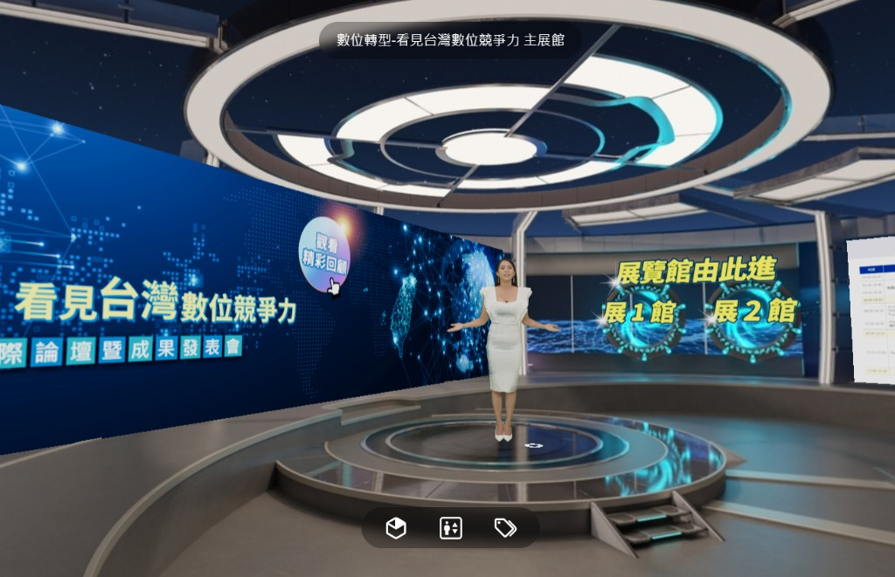
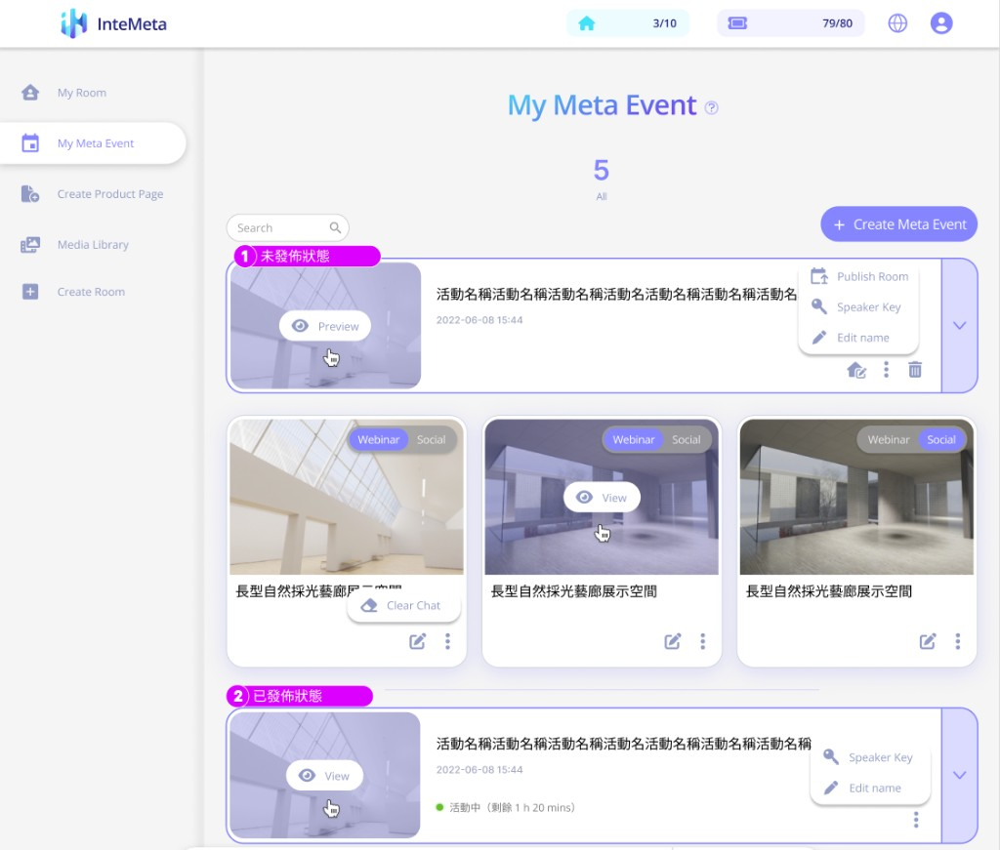
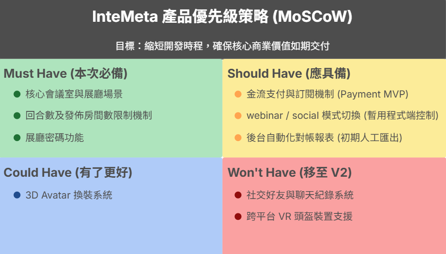

把客製的元宇宙系統，重構成 可複用的 SaaS
Turning a bespoke metaverse system into a repeatable SaaS
重構優先級策略與交付節奏，協助轉型為可複用的 SaaS 產品。成功將產品上線時程縮短 25%（提前 3 週交付），並導入 B2C 金流系統與核心功能，促成與日本大型連鎖書店的合作案，奠定產品商業變現基礎。
Refactored the prioritisation strategy and delivery rhythm to turn the system into a reusable SaaS. Cut launch time by 25% (shipped 3 weeks early), rolled out a B2C payment flow with the core feature set, and unlocked a partnership with a major Japanese bookstore chain — laying the foundation for product monetisation.
背景與挑戰
原始產品迭代功能模糊、週期冗長、交付節奏不穩定，且為專案模式， 功能單一、每次都需客製無法複用，導致潛在 B2B 合作客戶的需求無法被滿足。
The original product suffered from fuzzy iteration scope, long cycles and unstable delivery rhythm — and as a project-based build, every client required custom forks with no reuse, leaving prospective B2B partners' needs unmet.
我的角色
- 主導 SaaS 化轉型的產品規劃與優先級重構。
- 評估第三方金流（B2C Payment Flow）與 API 規格。
- 建立產品文件庫（Sales Kit、操作手冊）與教育訓練流程。
- 推動 Scrum + Asana 工作方法，提升團隊開發節奏與可預期性。
- Owned the SaaS-ization roadmap and re-prioritised scope.
- Vetted third-party payment providers and designed the B2C payment flow & API contract.
- Built the product knowledge base — sales kits, ops playbooks and enablement training.
- Introduced Scrum + Asana rituals to give the team a predictable rhythm.
產品樣貌
元宇宙活動平台的前／後台示意圖。
前台是觀眾的沉浸式虛擬展會體驗，後台是主辦方在 My Meta Event 自助配置多房間、
方案式管理的控制介面。
A look at the metaverse event platform, front and back.
The front-end is the audience's immersive experience; the back-end is the My Meta Event console
where admins self-serve multi-room tiered management.


流程與決策
- 客戶訪談：盤點既有客戶及日本市場共通需求，釐清迭代功能及規格。
- 優先級重構：使用 MoSCoW 框架對齊產品路線圖重構優先級，並導入金流奠定 SaaS 化基礎。
- 商業化配套：推出關鍵功能（以方案式銷售，限制上架房間數及發佈回合數），滿足日本大型連鎖書店等潛在客戶的商業及客製化場景需求。
- 資訊同步機制：建立產品更新即時溝通流程，資訊同步時間 3 天 → 8 小時。
- Customer research: audited existing clients and the Japanese market for shared needs to clarify iteration scope and specs.
- Reprioritisation: realigned the product roadmap with the MoSCoW framework; introduced payments to lay the SaaS foundation.
- Monetisation: shipped tiered packaging (room-count & release-cycle limits) to serve commercial & customisation scenarios for partners like the Japanese bookstore chain.
- Sync ritual: built a real-time update pipeline — info sync time 3 days → 8 hours.

關鍵成果
成果與影響
順利促成與日本大型連鎖書店的跨國合作，為公司打開國際市場。 產品文件庫與教育訓練流程的建立，也讓業務與客服能在 PM 不介入的情況下獨立服務客戶，大幅提升拓展效率。
Landed a cross-border partnership with a major Japanese bookstore chain, opening up international markets. With the new product library and enablement in place, sales and CS could run customer engagements end-to-end without needing PM escalation — making growth truly scalable.
我學到的事
- SaaS 化過程中的評估及取捨，同時對齊產品藍圖並滿足客戶需求，是讓轉型成功的關鍵。
- 資訊同步速度在跨國合作中不只是效率指標，更是建立專業信任度的基礎。
- The key to a successful SaaS-ization lives in the trade-offs — aligning the product roadmap while still meeting real customer needs.
- In cross-border collaboration, sync speed isn't just an efficiency metric — it's the foundation of professional trust.